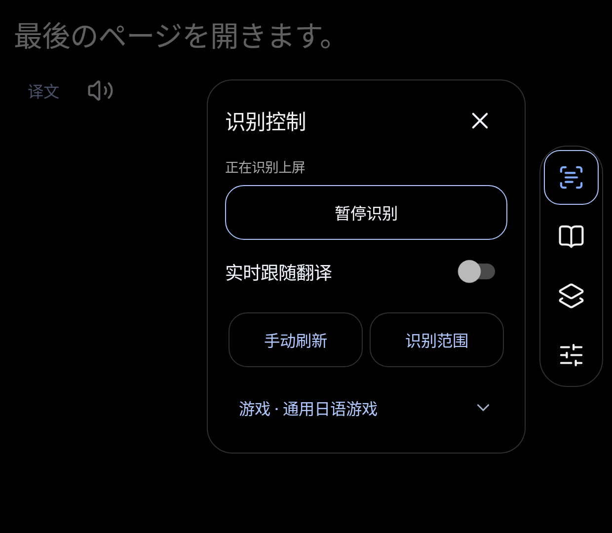
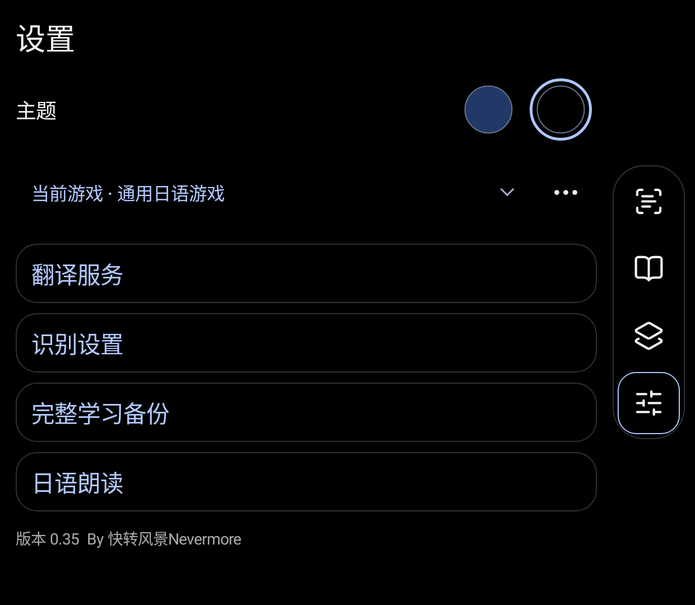
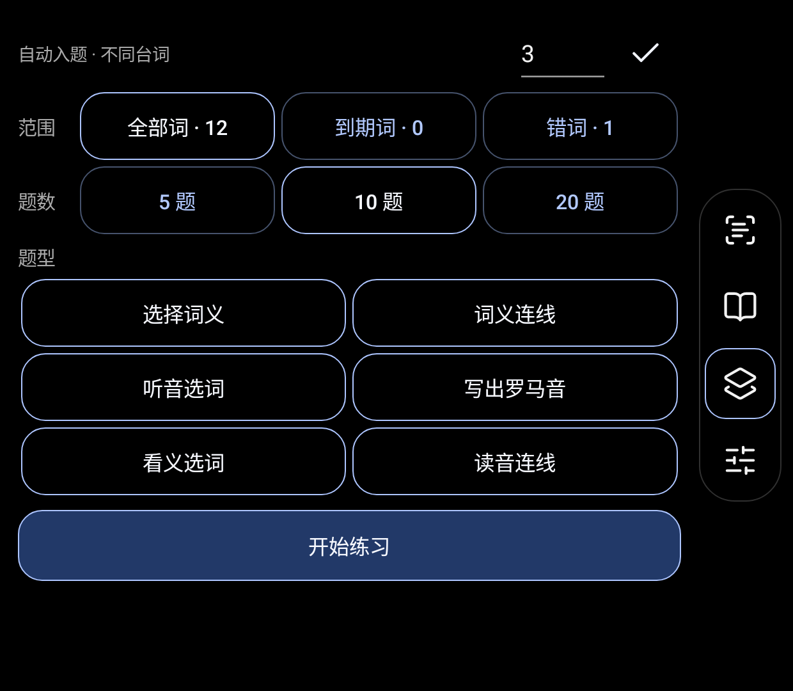

ScreenStudy · 双屏日语伴读 0.35
By 快转风景Nevermore · 安装与使用手册 · 2026-11-01
安装软件 → 配置自己的翻译 API → 开始识别并授权 → 框选台词 → 阅读、查词与练习
安装教程
1. 下载哪一个文件
请到 GitHub 最新版下载页，展开 Assets（资源）：
- 只安装软件：下载
ScreenStudy-0.35.apk。 - 连教程一起下载：下载
ScreenStudy-0.35-Share.zip，解压后进入01_安装包。 Source code (zip)是 GitHub 自动生成的仓库文件压缩包，不是安卓安装包。
如果你从百度网盘或夸克网盘收到本文件夹，直接使用 01_安装包/ScreenStudy-0.35.apk 即可。ZIP 需要先解压，不能直接安装 ZIP。Mac 或 Windows 电脑只负责下载和传文件；软件本体安装在安卓设备上。
2. 在掌机上安装
- 用掌机浏览器下载 APK，或把电脑上的 APK 通过 USB、网盘传到掌机的“下载”文件夹。
- 打开系统“文件”或“文件管理”，找到
ScreenStudy-0.35.apk，点击安装。 - 如果系统提示不允许安装此来源的应用，为你正在使用的浏览器或文件管理器开启“允许安装未知应用”，然后返回安装。
- 安装完成后，桌面图标名称是 双屏日语伴读。文件名和项目名是 ScreenStudy，它们是同一个软件。
- 两块屏幕均打开时启动应用。设备如果提供可访问的独立副屏，应用会尝试在副屏打开；没有可用副屏时回到当前屏幕。
基础安装不需要电脑、不需要开发者选项、不需要 Root、Shizuku、无障碍服务或悬浮窗权限。日文识别模型已包含在 APK 中，不需要另装 OCR 软件。
3. 第一次设置翻译服务
日文识别与联网翻译是两件事：识别模型随软件提供；整句中文和词义由你自己的翻译 API 提供。安装包不赠送公共密钥，也不包含作者账号。
- 在右侧点击最下面的“设置”图标，进入 翻译服务。
- 准备服务商的 API 密钥。下面按应用默认的 DeepSeek 接口举例：官方 API 平台；官方接入文档。
- 填写“服务地址”：
https://api.deepseek.com。 - 填写“模型名称”：
deepseek-flash。其他兼容服务请填写服务商实际提供的模型 ID。 - 在密钥输入框粘贴你自己的 API 密钥，点击 保存，再点 测试连接。修改配置后要重新测试，以当前配置的结果为准。
- 如地址、模型字段未展开，点翻译服务区域的更多操作，展开相应设置。保存过密钥后输入框会清空，显示“留空保留已有密钥”，属于正常行为。
服务地址必须是 HTTPS。应用会自动补上 /chat/completions，不要填写网页聊天页面地址，也不要误把 /responses 当成这里的接口。兼容服务需要支持 Chat Completions 和 JSON 对象输出；接口兼容性以“测试连接”和实际翻译为准。
截至 2026-11-01，以上地址和模型写法已核对官方文档。模型与收费以后可能调整，请以服务商最新说明为准。使用 API 可能产生费用，和网页或手机聊天客户端的账号权益不一定相同。
4. 允许屏幕读取
- 把要阅读的日文游戏或应用放在系统主屏，把本软件留在副屏。
- 在本软件右侧点击最上面的“识屏”图标；如果当前在其他页面，第一次点击先回识屏页，再点一次打开识别控制。
- 点击 开始识别，按系统提示允许屏幕共享/录制；Android 13 及以上还可能请求通知权限。
- 若系统提供整屏与单应用选择，按主屏完整画面的方式授权。本软件读取系统主屏，不会自动识别哪块屏幕被厂商命名为“上屏”。
- 回到游戏，停在有日文台词的画面，再进行下面的范围框选。
这是 Android 的屏幕采集授权，目的是读取画面中的日文。开始新的采集会话时，系统可能再次要求确认，这是正常的系统行为。参考：Android 屏幕采集说明。
5. 框选台词区域
进入 设置 → 识别设置 → 识别范围，选择“框选上屏台词区域”，在预览中拖出对话框范围，再点 保存范围。框选前需要先开始识别。
只框台词正文，尽量避开头像、选项、按钮、人物名和装饰。也可以使用“识别全屏文字”或“使用下半屏对话框”预设。游戏里对话框位于画面的下部，和双屏设备的实体下屏不是同一个概念。
完成标准：副屏能读到主屏当前的日文台词；展开译文能看到中文；点词能查到释义。没有声音可以先继续使用识别和翻译，再按“所需软件”安装离线日语语音。
6. 老用户更新
直接安装新版 APK，选择覆盖更新。当前发行沿用 local.screenstudy.mac 包名和固定签名，可覆盖本系列已安装版本。建议先从“设置 → 完整学习备份”导出资料。
遇到“与现有应用冲突”或“签名不一致”，先保留原应用并导出资料，不要直接卸载。早期包名为 local.screenstudy 的版本不属于同一个安装身份，不能承诺自动覆盖或自动迁移。不要在没有备份时清除数据。
使用教程
每次打开游戏时
- 主屏打开游戏，副屏打开“双屏日语伴读”。
- 进入识屏页，打开识别控制，点击“开始识别”并完成系统授权；已暂停的会话点击“继续识别”。
- 选择对应游戏配置，检查识别范围是否仍对准对话框。换游戏或画面布局后重新框选。
- 主屏出现台词后，在副屏阅读日文、查看中文、点词查义。
- 暂时不需要更新时点“暂停识别”；彻底结束读取，可使用系统识别通知中的“停止”，或系统屏幕共享的停止入口。
暂停保留当前读取会话，便于继续；关闭整个采集会话后，下次可能重新请求授权。
右侧四个图标
| 从上到下 | 用途 |
|---|---|
| 识屏 | 回到伴读；在伴读页再点击会打开开始识别 / 暂停识别 / 继续识别控制 |
| 单词本 | 查找、收藏、管理查过的单词 |
| 练习 | 选择范围、题数和题型，开始或继续练习 |
| 设置 | 翻译服务、识别、日语朗读、学习备份、主题 |
蓝色边框表示当前页面。识屏图标本身变蓝，表示正在识别且没有暂停。较矮的窗口中，右侧按钮区域可以上下滑动；正文区域也可以滚动。
整句中文、点词和固定台词
- 整句中文：点击台词下方的译文区域展开中文；第一次使用时先配置翻译服务。
- 点词：点击日文词语查看释义、读音；词卡上的关闭按钮可关闭查词。
- 词语朗读：点扬声器图标。需要可用的离线日语语音。
- 默认模式：打开译文或查词时会暂时固定原句，方便慢慢看。收起/关闭后接回最新台词。
- 实时跟随：在识别控制或“设置 → 识别设置”开启 实时跟随翻译。新台词会持续跟随，触摸和阅读弹窗期间仍保留短时保护。这个开关默认关闭。
- 识别不对时：先检查范围，必要时使用识别控制中的刷新功能。细小假名、低对比度或装饰字体都可能影响 OCR。
切换游戏与识别设置
不同游戏可以使用各自的配置、识别范围和最近台词。切换配置后确认正在使用正确游戏；如果系统提示重新框选，按新画面保存范围。
“设置 → 识别设置”可调整台词字号、识别频率、范围以及文字清理。刚开始先保留默认值，优先把识别范围框准。较大字号和较小副屏会需要更多滚动。
单词本和练习
点词会形成查词记录，可在单词本中搜索、收藏、编辑释义和管理复习。自动入题阈值按查过的不同台词计算，并非每点一次同一个词都马上增加一道练习。
进入“练习”后直接选择：
- 范围：全部词 / 到期词 / 错词。
- 题数：5 / 10 / 20。
- 题型：选择词义、词义连线、听音选词、写出罗马音、看义选词、读音连线。
“开始练习”按选择的数量新开一轮；有未完成进度时，用“继续上次练习”。连线配对完成后直接点“下一题”。罗马音使用应用内键盘。没有可用日语声音时，可在听力题旁点击“现在不做听力题”，替换本轮未答的听力题。
如果可用单词不足、释义为空或有效干扰项不够，可能暂时无法生成所选练习。先积累更多有释义的单词，再开始。
备份与换机
“设置 → 完整学习备份”中导出完整学习资料，保存到自己能找到的位置，再自行上传网盘。恢复前先读预览；恢复会替换当前学习资料，建议先备份当前存档。
备份可保留单词与复习记录、游戏配置、最近台词和练习进度；翻译服务密钥不会跟随学习备份共享。换机后需要重新填写自己的翻译服务配置。不要把含个人学习记录的备份当成软件安装包发给所有人。
界面参考
以下图片来自专用模拟器和示例词条，用来认识按钮，不代表每台掌机有相同分辨率，也不包含作者的个人学习数据。



安装所需软件
必装的软件已经在包里
ScreenStudy-0.35.apk 就是软件本体，放在分享包的 01_安装包。内含日文 OCR 模型和分词逻辑，不需要再装独立识字工具、Java、Python、Android Studio，也不需要安装电脑运行环境。
设备要求：Android 8.0（API 26）及以上；若要同时显示游戏和伴读，系统需要提供可运行独立应用的副屏。APK 内含 arm64-v8a、armeabi-v7a、x86、x86_64 架构库。满足系统版本不代表已在所有设备实测，详细范围见适配说明。
联网翻译必备：自己的服务账号和 API 密钥
这不是另一个必须安装的 App。在服务商网页申请 API 密钥，回到本软件中填写即可。默认接口示例：
需要可用网络和该服务的有效额度。安装官方聊天 App 并不能自动给本软件提供 API 密钥。密钥由使用者自行配置，不向别人索取或共用作者的密钥。
仅日语朗读需要：支持离线日语的 TTS 引擎及语音包
先去系统设置搜索“文字转语音”或“TTS”，检查是否已有支持日语的引擎。已有的就不用重复安装；没有时可通过设备正规应用商店获取支持日语离线语音的引擎。
Google 的官方选项：Speech Recognition & Synthesis / Google 语音服务。是否可下载取决于设备、地区和商店环境。
- 在系统“文字转语音输出”中选择该引擎。
- 进入引擎设置，选择“安装语音数据”，下载 日语 / 日本語 的离线语音包。
- 回到软件的“设置 → 日语朗读”，试听日语。
- 如有声音，才算配置完成。只装引擎而没有装日语数据，可能依然无法朗读。
官方参考：Android 文字转语音设置。
第三方引擎及语音包不随本分享包重新打包；请使用官方入口安装更新。无法访问 Google Play 时，可以使用设备厂商提供的引擎，但必须确认支持离线日语；不需要为基础识别、看中文或点词去安装 TTS。
只有电脑安装排障才需要：Android Platform-Tools
通常用掌机文件管理器点 APK 即可。只有希望从电脑安装或提供故障信息时，才需要 Google 官方 Platform-Tools，页面可选择 Windows / Mac / Linux 下载。
此工具是可选的。普通用户无需开启 USB 调试，也无需安装 Android Studio。本分享包附带官方入口链接，没有附带来历不明的“激活器”、破解工具或一键授权软件。
双屏与下屏适配说明
支持的双屏形态
本软件面向“主屏运行日文游戏，独立副屏显示伴读”的安卓设备。启动时尝试选择开启且可访问的非主屏；无法启动副屏时回退当前屏幕。
它不固定要求某个下屏分辨率，也不写死副屏编号为 1。但当前版本固定读取 Android 的主显示屏（display 0），并不自动判断物理上下位置。因此其他设备上要先确认：游戏在系统主屏、伴读在可运行应用的独立副屏。
折叠手机的一整块大屏、只做镜像的外接屏、仅显示厂商专用面板的触摸区，不能仅因为“看起来有两块区域”就视为相同的双屏系统。有三块或更多显示屏时，目前没有手动目标屏幕选择器，自动选择结果受系统显示屏枚举影响。
0.35 对下屏适配的处理
- 沿用按 dp、屏幕宽度和密度排版，正文与设置页面可以滚动。
- 修复只改变窗口高度时未触发布局重建的遗漏；调整后继续保留会话和当前台词。
- 系统栏、屏幕缺口和系统键盘出现时为内容留出相应空间，避免边缘遮挡。
- 右侧四个导航按钮加入有高度限制的滚动容器，较矮窗口中可上下滚动找到按钮。
- 小屏或较大系统字体不保证所有设置一屏显示；可以滚动触达，不会按 Thor 的像素尺寸直接拉伸整张界面。
验证范围
真机依据是 AYN Thor；本次未改动掌机的个人数据或正在运行的读取会话。其他品牌型号没有对应真机，不能写成“全部已适配”。
本次使用专用 Android 13 模拟器的独立副屏，逐组切换宽高、密度和字体，并核对实际生效的显示参数：
| 副屏像素尺寸 | 密度 | 字体比例 | 验证状态 |
|---|---|---|---|
| 1240 × 1080 | 369 dpi | 1.0 | 通过 |
| 960 × 720 | 320 dpi | 1.0 | 通过 |
| 720 × 960 | 320 dpi | 1.0 | 通过 |
| 1280 × 720 | 240 dpi | 1.0 | 通过 |
| 960 × 640 | 320 dpi | 1.0 | 通过 |
| 960 × 720 | 320 dpi | 1.3 | 通过 |
每组检查页面切换、导航和练习开始按钮的可达性、仅高度变化后的重建与会话保留、系统边缘与键盘的安全间距，并检查罗马音键盘、答案滚动和选择题布局。这些是界面尺寸测试，不能代替其他品牌的副屏权限、录屏行为和真机游戏兼容验证。
仍需注意的设备差异
- 主屏旋转、分辨率或游戏画面方向改变后，建议停止采集并重新开始，再重新框选；当前没有承诺自动跟踪采集尺寸变化。
- 某些厂商限制副屏启动、后台运行或从副屏申请主屏录屏；需要用该设备的窗口/双屏管理功能调整。
- 禁止截屏的受保护画面可能为黑屏。软件不能绕过应用或系统的画面保护。
- 很窄的屏幕或极大字体仍可能需要更多滚动；发现按钮被裁切时，请附设备型号、Android 版本、下屏分辨率、系统显示大小和字体设置反馈。
本次布局修复参考 Android 自适应布局 与 窗口安全间距 的官方说明。
常见问题
安装后找不到 ScreenStudy
桌面显示名称是“双屏日语伴读”，安装文件和 GitHub 项目叫 ScreenStudy。
提示未知来源，装不上
在系统提示页为当前浏览器或文件管理器开启“允许安装未知应用”，回到 APK 继续安装。确认下载的是 .apk，不是 ZIP，也不是网盘网页链接。
提示应用冲突、签名不一致、无法降级
保留现有应用，先导出学习备份。检查旧版是否来自本系列、包名是否为 local.screenstudy.mac，以及下载版本是否更旧。不要直接卸载后丢失资料。最早期不同包名或签名版本可能需要单独迁移。
软件跑到主屏，或没有跑到想要的屏幕
确认副屏已经开启且支持运行普通安卓应用。使用设备自带的双屏/窗口移动功能。仅镜像或厂商封闭副屏无法保证使用。多于两个可访问显示屏时，目前没有手动选择目标屏幕的功能。
副屏没有日文、预览黑屏，或者识别的是软件自己
检查“开始识别”是否已授权，游戏是否在系统主显示屏，系统共享的是不是正确整屏。先用主屏上的普通日文应用测试，再看游戏。受保护内容可能无法采集。主屏刚旋转或改分辨率时，停止后重新开始。
日文能显示，但没有中文
OCR 本地识别成功不代表翻译配置完成。进入翻译服务检查自己的密钥、HTTPS 地址、模型名称、网络和额度，保存后测试连接。仅安装聊天 App 不会自动配置这里的 API。
提示连接成功，换了地址或模型又失败
修改之后需要保存并重新测试。留空密钥框会保留已有密钥；更换服务商通常需要填写该服务商的新密钥。接口需要兼容 Chat Completions 与 JSON 输出。
识别到人物名、按钮，或频繁跳字
只框对话正文，避开小读音、菜单、装饰和人物名。优先调整范围，再调整识别频率。画面特别小、艺术字体和低对比台词的识别效果取决于 OCR，不能保证每字都准确。
台词停在上一句
先看是否暂停识别，或仍开着词卡/译文。默认模式会为阅读固定台词，关闭对应内容后回最新句。想持续跟随可开启“实时跟随翻译”。
没有声音
系统需要可用的离线日语语音；安装引擎后，还要下载日语语音数据。在软件“日语朗读”里试听，并检查掌机媒体音量。没有语音不影响基础文字识别和翻译。
下屏内容显示不全
先上下滚动正文；较矮窗口的右侧导航也可以滑动。检查系统字体或显示大小是否设置得很大。0.35 已补上高度变化和安全边缘处理；不同品牌仍需真机验证。
无法开始练习或题型不够
先积累有释义的单词。有效单词、四个不同选项或连线配词不足时不会编造内容凑题。没有声音时可在听力题旁选择“现在不做听力题”。
怎么反馈
到 GitHub Issues 提供：软件版本、设备型号、Android 版本、主副屏分辨率、出错步骤和截图。不要公开 API 密钥、个人数据库或私人学习备份。
数据与隐私说明
屏幕和翻译
开始识别需要系统屏幕采集授权。应用对采集到的主屏画面进行本地日文 OCR；联网翻译时，待翻译的日文、所查词语及必要上下文会发送到你在设置中填写的服务地址。请使用可信的服务，避开密码、聊天等私人画面。
所用第三方翻译服务有自己的隐私政策和收费方式。本仓库不提供共享密钥、不替用户充值，也不收取 API 密钥。
本地资料
单词、复习进度、游戏配置、最近台词与缓存保存在设备上。API 密钥使用原有 AndroidKeyStore 加密方式保存在本地。卸载或清除应用数据可能失去资料和密钥；覆盖更新前仍建议导出学习备份。
学习备份不包含翻译服务密钥。把软件发给别人时只分享公开发行包，不要附上自己的数据库、设置导出或学习备份。
分发包内容
公开包仅含应用安装包、公开发布元数据、教程、示例界面图、官方软件入口和校验值。没有附带作者账号、翻译凭据、学习数据库、签名私钥、调试测试包或掌机存档。公开发行包已关闭应用调试。
第三方组件
软件沿用已有的 OCR、分词及图标等第三方组件。原 APK 中的声明和许可继续保留；本仓库另附原有 Lucide 图标许可。第三方服务和组件遵循各自的条款。本仓库是公开安装包与文档分发仓库，不声称提供完整可独立编译的原始源码，也未额外授予第三方组件的许可。
更新记录
0.35 · 2026-11-01
- 名称保留 ScreenStudy / 双屏日语伴读，署名保留 By 快转风景Nevermore。
- 修复仅窗口高度改变时遗漏的布局刷新。
- 处理系统栏、屏幕缺口和键盘占用的安全边缘。
- 右侧导航在较矮窗口中可以滚动，保留四个固定入口。
- 沿用现有包名和固定签名，versionCode 从 68 增加到 69。
- 公开发行关闭应用调试；不包含个人设置、密钥和学习数据。
- 增加面向新用户的安装、配置、使用、依赖、适配和排障教程，以及可离线打开的图文版。
本次不更改翻译 API 或原有学习数据格式。其他品牌的真机双屏兼容性仍需反馈验证。